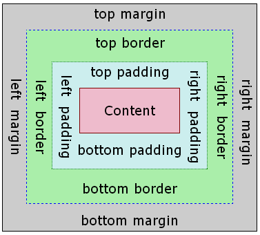

CSS: Cascading Style Sheets
2018-03-20 css 선택자에 대해 배웠다. 태그{css}
태그 선택자
< 클래스 선택자 < 아이디 선택자
태그 선택자가 훨씬 포괄적이다. 아이디 선택자는 구체적이다.
"CSS BOX MODEL"
css

18.03.21 grid에 대해 배우고 있다.
NAVIGATION
Navigation is a field of study that focuses on the process of monitoring and controlling the movement of a craft or vehicle from one place to another. The field of navigation includes four general categories: land navigation, marine navigation, aeronautic
navigation, and space navigation.